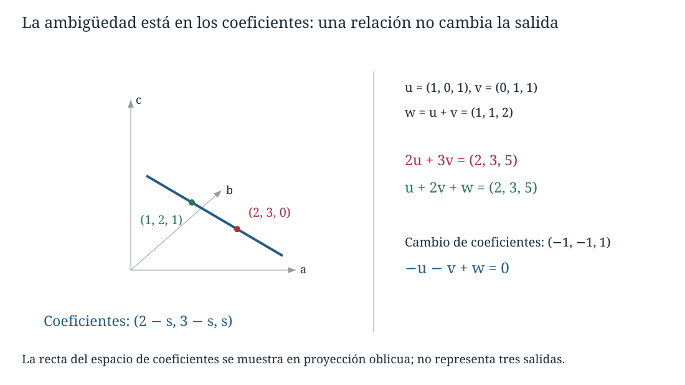
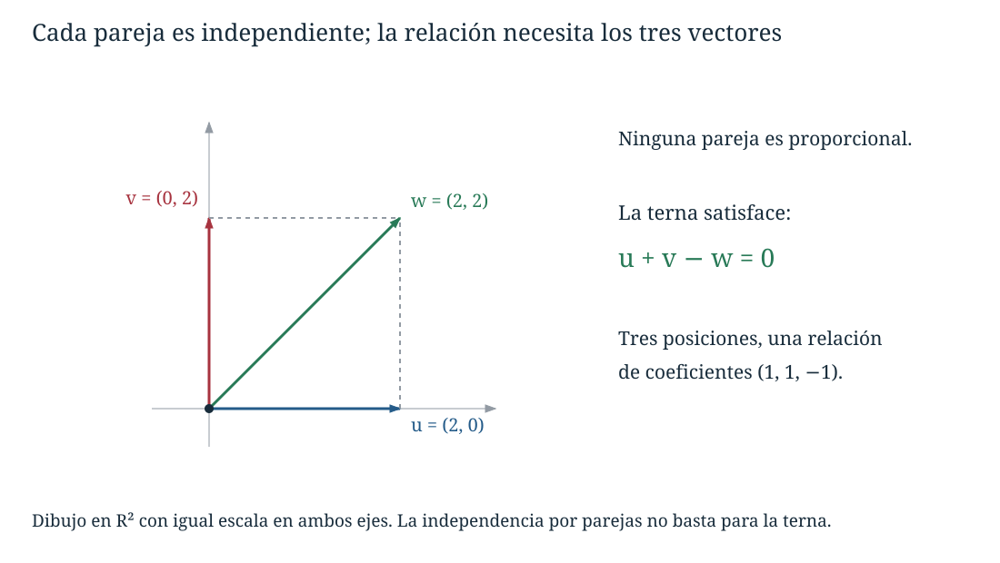
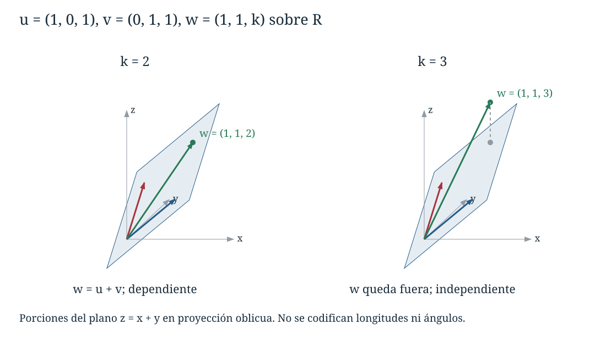

Capítulo 6. Dependencia e independencia lineal
Álgebra para matemáticos · Tomo II
← Capítulo 5 · Índice del tomo II · Obra completa · Capítulo 7 →
Tres controles producen las salidas \(u=(1,0,1)\), \(v=(0,1,1)\) y \(w=(1,1,2)\). Si damos a los controles intensidades \(a,b,c\), la salida combinada es \(au+bv+cw\). Podemos obtener \((2,3,5)\) con intensidades \((2,3,0)\) o con \((1,2,1)\). La razón es visible en las propias salidas: \(w=u+v\). Aumentar en uno el tercer control y disminuir en uno los dos primeros deja la salida intacta.
La misma observación puede escribirse como \(-u-v+w=0\). Esta igualdad registra un cambio de intensidades que no produce ningún cambio de salida. Conocer todas las igualdades de ese tipo nos permitirá reconocer qué controles sobran y cuándo una salida determina las intensidades de manera única.

Trabajaremos en un espacio vectorial \(V\) sobre un cuerpo \(\mathbb F\). Los ejemplos numéricos son reales salvo indicación contraria. Una relación puede involucrar columnas, matrices, polinomios o funciones; su significado depende de las operaciones del espacio y del cuerpo de coeficientes.
6.1. Relaciones que producen el vector cero
Definición 6.1 (relación, dependencia e independencia de una lista). Para una lista finita \(v_1,\ldots,v_r\) de vectores, una relación lineal es una igualdad \(a_1v_1+\cdots+a_rv_r=0_V\) con \(a_j\in\mathbb F\). La relación es trivial si todos los coeficientes son cero. La lista es linealmente independiente si toda relación es trivial, y linealmente dependiente si existe una relación no trivial.
La independencia afirma una implicación para todos los coeficientes:
\[ \sum_{j=1}^r a_jv_j=0_V \quad\Longrightarrow\quad a_1=\cdots=a_r=0_{\mathbb F}. \]
Para refutar esa implicación necesitamos una relación en la que no todos los coeficientes sean cero. No se exige que todos sean no nulos: basta uno. En la lista \(u,v,0_V\), con \(u,v\) independientes, la igualdad \(0u+0v+1\cdot0_V=0_V\) ya demuestra dependencia.
La lista vacía es independiente: sólo admite la tupla vacía de coeficientes y su suma es cero. Una lista con un único vector \(v\) es independiente exactamente cuando \(v\ne0_V\), porque la anulación escalar de C04 transforma \(av=0_V\), con \(a\ne0\), en \(v=0_V\).
Importa conservar las posiciones de la lista. La lista \(u,u\) es dependiente por \(1u+(-1)u=0_V\), incluso si \(u\ne0_V\). El conjunto \(\{u\}\), que ya no conserva la repetición, es independiente si \(u\ne0_V\). Más adelante usaremos familias indexadas para mantener esta distinción sin depender de una numeración finita. Cuando se hable de independencia de un conjunto finito, sus elementos se consideran una vez cada uno.
Para dos vectores no nulos, dependencia equivale a que uno sea múltiplo del otro. Si \(au+bv=0\) es no trivial y \(b\ne0\), entonces \(v=-b^{-1}au\); si \(b=0\), la igualdad obligaría a \(a=0\) porque \(u\ne0\), contradicción. La implicación contraria resulta pasando un múltiplo al otro lado. Para tres vectores, la ausencia de pares proporcionales no garantiza independencia: en \(\mathbb R^2\), \((1,0),(0,1),(1,1)\) no son proporcionales por parejas, pero el tercero es la suma de los dos primeros.

6.2. Qué vector puede eliminarse
En una igualdad \(a_1v_1+\cdots+a_rv_r=0\), un coeficiente no nulo permite despejar su vector. El paso decisivo consiste en escoger una posición donde exista un inverso escalar.
Teorema 6.1 (dependencia y eliminación). Una lista finita es dependiente si y sólo si alguno de sus vectores pertenece al generado de los restantes. Si una relación tiene coeficiente \(a_k\ne0\), entonces
\[ v_k=-\sum_{j\ne k}a_k^{-1}a_jv_j, \]
y quitar la posición \(k\) no cambia el subespacio generado. Además, en toda lista dependiente existe una posición \(k\) cuyo vector pertenece al generado de los anteriores \(v_1,\ldots,v_{k-1}\).
Demostración. Una relación no trivial tiene algún coeficiente no nulo. Despejarlo da la fórmula y expresa el vector como combinación de los otros. Cualquier combinación de la lista completa puede entonces reescribirse sustituyendo esa fórmula, sin usar \(v_k\). Por tanto el generado completo está contenido en el de la lista abreviada. La inclusión contraria se sigue de que la lista abreviada sólo contiene vectores de la original.
Recíprocamente, si \(v_k=\sum_{j\ne k}b_jv_j\), trasladar todo a un lado produce una relación cuyo coeficiente en la posición \(k\) es uno. Es no trivial porque \(1_{\mathbb F}\ne0_{\mathbb F}\). Si la lista tiene un solo vector y éste es cero, el generado de los restantes es el generado vacío \(\{0_V\}\), de modo que el argumento incluye ese caso.
Para la última afirmación, partimos de una relación no trivial y elegimos el mayor índice \(k\) con coeficiente no nulo. Esta elección elimina todos los términos posteriores; al despejar \(v_k\) sólo aparecen los anteriores. Si \(k=1\), la relación dice \(a_1v_1=0\) y por tanto \(v_1=0\), que pertenece al generado de la lista anterior vacía. \(\square\)
La conclusión no permite eliminar cualquier vector de una lista dependiente. En \(u,v,0\) con \(u,v\) independientes, la relación exhibida sólo tiene coeficiente no nulo en la posición del cero. Eliminar \(u\) o \(v\) reduce el generado. Tampoco un coeficiente cero en una relación prueba por sí solo que ese vector sea indispensable: podría aparecer con coeficiente no nulo en otra relación.
En el ejemplo inicial, todas las relaciones se obtienen comparando componentes:
\[ au+bv+cw=(a+c,b+c,a+b+2c)=0. \]
Las dos primeras ecuaciones dan \(a=-c\) y \(b=-c\); la tercera se satisface entonces automáticamente. Las relaciones son exactamente \(c(-1,-1,1)\) en el espacio de coeficientes. Cualquiera de los tres vectores puede quitarse sin cambiar el generado, porque en esa relación los tres coeficientes son no nulos sobre cualquier cuerpo.
Proposición 6.1 (herencia). Quitar posiciones de una lista independiente conserva la independencia. Añadir posiciones a una lista dependiente conserva la dependencia.
Demostración. Una relación en la lista abreviada se completa con ceros en las posiciones eliminadas. Si la lista completa es independiente, todos los coeficientes de esa relación deben ser cero. Para la segunda afirmación, una relación no trivial de la lista anterior sigue siendo no trivial al añadir coeficientes cero en las posiciones nuevas. \(\square\)
Proposición 6.2 (añadir un vector). Si \(v_1,\ldots,v_r\) es independiente, la lista \(v_1,\ldots,v_r,w\) es independiente si y sólo si \(w\notin\operatorname{span}(v_1,\ldots,v_r)\).
Demostración. Si \(w\) pertenece al generado, una representación suya produce una relación con coeficiente uno en su posición, y la lista ampliada es dependiente. Si \(w\) no pertenece, consideremos una relación \(\sum_{j=1}^r a_jv_j+bw=0\). Un \(b\) no nulo permitiría despejar \(w\) como combinación de los \(v_j\), contradicción. Luego \(b=0\), y la independencia previa obliga a \(a_1=\cdots=a_r=0\). Para \(r=0\), la condición es \(w\notin\{0_V\}\), de acuerdo con el caso de un solo vector. \(\square\)
Esto permite leer una lista en orden: será independiente exactamente cuando cada vector quede fuera del generado por los anteriores. Si aparece un primer vector que no aporta esa novedad, el prefijo que termina allí es dependiente, y la lista completa también. El teorema 6.1 explica por qué siempre encontraremos una posición de ese tipo si hay dependencia; no necesitamos ensayar por separado todos los posibles vectores que podríamos despejar.
6.3. Unicidad de los coeficientes
La misma relación que permite quitar un vector explica todas las ambigüedades de representación.
Teorema 6.2 (independencia y representación única). Una lista \(v_1,\ldots,v_r\) es independiente si y sólo si cada vector de su generado tiene una única representación \(x=\sum_{j=1}^r a_jv_j\) mediante esa lista.
Demostración. La pertenencia al generado garantiza existencia de al menos una representación. Si la lista es independiente y dos tuplas \(a,b\) representan el mismo \(x\), restar sus expresiones da \(\sum_{j=1}^r(a_j-b_j)v_j=0\). Por independencia, \(a_j-b_j=0\) para todo \(j\), y las tuplas coinciden.
Recíprocamente, si todos los vectores del generado tienen representación única, esto ocurre en particular para \(0_V\). Como los coeficientes todos nulos ya lo representan, cualquier relación debe tener precisamente esos coeficientes; la lista es independiente. Para la lista vacía, el generado sólo contiene cero y éste tiene la única representación vacía. \(\square\)
La unicidad sólo se afirma para los vectores del generado. Las columnas \((1,0,0)\) y \((0,1,0)\) son independientes, pero ninguna combinación suya produce \((0,0,1)\). La generación controla la existencia; la independencia controla la unicidad una vez que existe una expresión.
Definición 6.2 (espacio de relaciones). Para una lista finita \(\mathcal L=(v_1,\ldots,v_r)\), su espacio de relaciones es
\[ \mathcal R(\mathcal L) =\left\{(a_1,\ldots,a_r)\in\mathbb F^r: \sum_{j=1}^r a_jv_j=0_V\right\}. \]
Es un subespacio de \(\mathbb F^r\): contiene la tupla nula, y si \(a,b\) son relaciones, las distributividades dan \(\sum_j(ca_j+db_j)v_j=c\sum_ja_jv_j+d\sum_jb_jv_j=0_V\). La lista es independiente exactamente cuando ese subespacio es \(\{0\}\).
Si \(c\) es una tupla que representa a \(x\), las tuplas que lo representan son exactamente \(c+\mathcal R(\mathcal L)\). En efecto, otra tupla \(d\) produce el mismo vector si y sólo si \(d-c\) es una relación. Es la traslación de un conjunto de soluciones homogéneas que conocimos en C04–C05, aplicada ahora al espacio de coeficientes.
Para la salida inicial \((2,3,5)\), podemos tomar \(c=(2,3,0)\) y obtenemos todas las representaciones \((2-s,3-s,s)\) con \(s\in\mathbb F\). Si la lista es dependiente, sumar a una representación múltiplos de una relación no nula produce representaciones distintas: \(c+s\alpha=c+t\alpha\) implicaría \((s-t)\alpha=0\), y algún coeficiente no nulo de \(\alpha\) obliga a \(s=t\). Sobre un cuerpo infinito esto proporciona infinitas representaciones; sobre un cuerpo finito proporciona tantas como escalares, sin convertir finitud en infinitud.
6.4. Detectar relaciones mediante eliminación
Si los vectores son columnas \(v_j\in\mathbb F^n\), formamos la matriz \(A=[v_1\ \cdots\ v_r]\). Una relación de la lista es exactamente una solución de \(Aa=0\). Los capítulos iniciales proporcionan un procedimiento completo para encontrar esas soluciones y decidir si existen soluciones no nulas.
Proposición 6.3 (criterio por pivotes). Las columnas de una matriz \(A\in M_{n,r}(\mathbb F)\) son independientes si y sólo si su forma escalonada tiene un pivote en cada columna, equivalentemente, si su rango por pivotes es \(r\).
Demostración. Las operaciones elementales no cambian las soluciones de \(Aa=0\). Si todas las variables son pivotales, la sustitución hacia atrás da como única solución la tupla cero. Si alguna variable es libre, podemos darle valor uno y dar valor cero a las otras variables libres; C01–C02 determinan valores de las pivotales que completan una solución. Esa tupla no es nula porque conserva una entrada libre igual a uno. Esto equivale exactamente a la definición de independencia de las columnas. Si \(r=0\), no hay variables y la única solución es la tupla vacía; el criterio sigue siendo válido. \(\square\)
Corolario 6.1. Toda lista de más de \(n\) vectores de \(\mathbb F^n\) es dependiente.
Demostración. Una matriz con \(n\) filas tiene a lo sumo \(n\) pivotes. Si tiene más de \(n\) columnas, alguna no puede ser pivotal; la proposición 6.3 proporciona una relación no trivial. \(\square\)
La cota cuenta posiciones posibles de pivotes en el algoritmo ya fundamentado de eliminación. Tener a lo sumo \(n\) columnas no asegura independencia: todavía puede faltar algún pivote.
Por ejemplo, para las columnas \((1,0,1),(0,1,1),(1,1,k)\), con \(k\in\mathbb F\), una relación exige \(a+c=0\), \(b+c=0\), \(a+b+kc=0\). Sustituir las dos primeras da \((k-2)c=0\). Si \(k\ne2\), sólo hay la relación trivial. Si \(k=2\), las relaciones son \(c(-1,-1,1)\). La escritura \(k-2\) significa \(k-(1_{\mathbb F}+1_{\mathbb F})\); en característica dos el valor excepcional es \(k=0\).
Las operaciones por filas conservan cada tupla de coeficientes que expresa una relación: si \(R=PA\) con \(P\) invertible, entonces \(Ra=0\) equivale a \(Aa=0\). Las operaciones por columnas cambian los coeficientes: si \(B=AE\) con \(E\) invertible, una tupla \(b\) es relación de \(B\) exactamente cuando \(Eb\) es relación de \(A\). Como \(b\mapsto Eb\) lleva cero a cero y ningún vector no nulo a cero, preservan la independencia de la lista completa, aunque cambien qué tupla expresa cada relación.

6.5. El cuerpo de los coeficientes
La lista \(1,i\) de números complejos es independiente cuando los coeficientes deben ser reales: \(a+bi=0\), con \(a,b\in\mathbb R\), obliga a que ambas partes sean cero. Con coeficientes complejos, en cambio, \((-i)\cdot1+1\cdot i=0\) es una relación no trivial. Los objetos no han cambiado; sí han cambiado los coeficientes permitidos.
Si restringimos los escalares de un espacio de un cuerpo \(\mathbb F\) a un subcuerpo \(\mathbb K\), una familia independiente sobre \(\mathbb F\) sigue siendo independiente sobre \(\mathbb K\): cada relación con coeficientes en \(\mathbb K\) ya era una relación admitida sobre \(\mathbb F\). El ejemplo \(1,i\) muestra que la implicación inversa puede fallar.
Hay una situación distinta en la que la independencia sí se conserva al pasar de reales a complejos.
Proposición 6.4 (columnas reales y coeficientes complejos). Una lista de columnas de \(\mathbb R^n\) es independiente sobre \(\mathbb R\) si y sólo si, considerada como lista de columnas de \(\mathbb C^n\), es independiente sobre \(\mathbb C\).
Demostración. Una relación real no trivial también es una relación compleja no trivial; por tanto la independencia compleja implica la real. Supongamos que la lista es independiente sobre \(\mathbb R\) y que \(\sum_j(a_j+ib_j)v_j=0\), con \(a_j,b_j\in\mathbb R\). Como las entradas de cada \(v_j\) son reales, comparar partes reales e imaginarias en cada componente da \(\sum_ja_jv_j=0\) y \(\sum_jb_jv_j=0\). La independencia real obliga a que todos los \(a_j,b_j\) sean cero. La relación compleja era trivial. \(\square\)
La hipótesis de entradas reales es lo que permite separar las dos ecuaciones de esa manera. No se aplica a la lista compleja \(1,i\) del ejemplo anterior.
Sobre cuerpos finitos también debemos examinar qué escalares se anulan. En la clasificación con parámetro de §6.4, el valor dos puede ser cero; en un despeje donde aparezca tres, el mismo problema surge en \(\mathbb F_3\). Las pruebas por relaciones siguen siendo válidas, pero sólo se invierten los coeficientes que son no nulos en el cuerpo declarado.
6.6. Polinomios, matrices y funciones
Para probar independencia de polinomios formales, una relación es una igualdad de coeficientes. Por ejemplo, si \(a\cdot1+b(1+t)+c(1+t+t^2)=0\), el coeficiente de \(t^2\) da \(c=0\), el de \(t\) da \(b+c=0\) y el constante da \(a+b+c=0\). Se obtiene \(a=b=c=0\) sin derivadas ni divisiones por enteros. El argumento funciona sobre cualquier cuerpo.
Más generalmente, una lista de polinomios no nulos con grados distintos es independiente. En una relación no trivial, entre los polinomios cuyo coeficiente es no nulo escojamos el de mayor grado. Sólo él aporta al coeficiente de esa potencia; su coeficiente principal y su coeficiente en la relación son ambos no nulos, por lo que su producto tampoco es cero. La suma no puede ser el polinomio cero, contradicción.
Las matrices \(E_{ij}\) de C05 son independientes por la misma razón localizada: en una relación \(\sum_{i,j}a_{ij}E_{ij}=0\), la entrada \((i,j)\) es exactamente \(a_{ij}\). Todas esas entradas deben ser cero. Comparar entradas puede ser más claro que apilar la matriz en una columna, aunque ambas maneras conducen al mismo sistema.
En un espacio de funciones, la igualdad exige comprobar todos los argumentos, pero podemos usar algunos valores para descartar relaciones.
Proposición 6.5 (certificado por evaluación). Sean \(f_1,\ldots,f_r:X\to\mathbb F\) y \(x_1,\ldots,x_m\in X\). Si las columnas de la matriz \(E=(f_j(x_i))_{i,j}\) son independientes, entonces las funciones \(f_1,\ldots,f_r\) son independientes.
Demostración. Si \(\sum_ja_jf_j=0\) como función, al evaluar en cada \(x_i\) obtenemos \(\sum_ja_jf_j(x_i)=0\). Estas ecuaciones forman \(Ea=0\). La independencia de sus columnas obliga a \(a=0\), de modo que toda relación de funciones es trivial. \(\square\)
La suficiencia no autoriza la recíproca para una selección fija de puntos. Las funciones reales \(1,t,t^2\) son independientes, pues una igualdad polinómica válida en todo \(\mathbb R\) tiene todos sus coeficientes nulos por C04. Si las evaluamos sólo en \(0\) y \(1\), las dos últimas dan la misma columna \((0,1)\) y los valores muestreados son dependientes. Perder información al tomar muestras puede crear relaciones que no son identidades de funciones.
En \(\mathbb F_2\), las funciones \(t\) y \(t^2\) en todo el cuerpo sí son iguales. Los polinomios formales \(t\) y \(t^2\) siguen siendo independientes por sus coeficientes, pero sus funciones sobre ese dominio no lo son. Hay que declarar tanto el objeto como el cuerpo antes de interpretar una relación.
6.7. Familias indexadas, incluidas las infinitas
Una sucesión \(v_1,v_2,\ldots\) puede contener infinitos vectores, pero las operaciones de un espacio vectorial sólo han definido sumas finitas. La independencia lineal de una familia debe conservar esa restricción.
Definición 6.3 (independencia de una familia indexada). Para una familia \((v_i)_{i\in I}\), una relación es una familia de escalares \((a_i)_{i\in I}\) de soporte finito, es decir, con sólo finitos \(a_i\) no nulos, tal que \(\sum_{i\in I}a_iv_i=0_V\). La suma se efectúa únicamente sobre ese soporte finito. La familia de vectores es independiente si toda relación tiene \(a_i=0\) para cada \(i\), y dependiente en caso contrario.
Los índices distintos pueden designar vectores iguales: si \(v_i=v_j\) para \(i\ne j\), los coeficientes uno y menos uno en esas dos posiciones producen una relación no trivial. Para un conjunto \(S\), la familia correspondiente es \((s)_{s\in S}\) y no repite elementos. Con \(I=\varnothing\) sólo existe la familia vacía de coeficientes; sigue siendo independiente.
Proposición 6.6 (criterio finito). Una familia indexada es independiente si y sólo si todas sus subfamilias finitas son independientes.
Demostración. Una relación no trivial de una subfamilia finita se extiende con ceros a todos los índices y demuestra dependencia de la familia completa. A la inversa, si la familia completa es dependiente, una relación no trivial tiene soporte finito; la subfamilia en ese soporte ya es dependiente. Ambas implicaciones prueban la equivalencia. \(\square\)
La familia \(1,t,t^2,\ldots\) de polinomios formales es independiente: cada relación utiliza finitos monomios y comparar sus coeficientes da cero en cada posición. Las sucesiones \(e_k\) que tienen uno en la posición \(k\) y cero en las demás también forman una familia independiente, porque evaluar una relación en la posición \(k\) recupera su coeficiente. Aunque sean independientes, sólo generan las sucesiones de soporte finito, como vimos en C05; la sucesión constante uno queda fuera.
La equivalencia del teorema 6.2 se extiende a estas familias interpretando cada representación como una familia de coeficientes de soporte finito. Restar dos de ellas sigue dando soporte finito, contenido en la unión de dos conjuntos finitos, y el mismo argumento identifica unicidad con ausencia de relaciones. No se afirma nada sobre series infinitas o convergencia.
En una lista finita, independencia significa también que ninguna posición puede quitarse sin reducir el generado: si una posición pudiera quitarse, su vector sería combinación de los restantes y aparecería una relación no trivial; si la lista es dependiente, el teorema 6.1 proporciona una posición eliminable. Reunir generación e independencia permitirá describir un espacio por datos suficientes y sin ambigüedad. Para hacerlo de manera sistemática tendremos que comparar listas y justificar hasta dónde pueden ampliarse o abreviarse.
6.8. Ejercicios
Leer una relación
1. Para \(u\ne0_V\), clasifique las listas vacía, \((0_V)\), \((u)\), \((u,u)\) y \((u,2u)\) sobre un cuerpo cualquiera. Exhiba una relación no trivial en cada caso dependiente.
2. Sean \(u,v\) independientes y \(w=2u-3v\). Halle todas las relaciones de \((u,v,w)\) sobre \(\mathbb F\). Indique qué posiciones pueden despejarse a partir de una relación no trivial cuando los escalares dos y tres son no nulos.
3. En \(\mathbb R^2\), pruebe que cada pareja de la lista \((1,0),(0,1),(1,1)\) es independiente y que la lista completa es dependiente. Explique por qué «ninguno es múltiplo de otro» no decide el caso de tres vectores.
4. Si \(u,v\) son independientes, halle todas las relaciones de \((u,v,0_V)\). Determine cuáles posiciones pueden quitarse conservando el generado.
5. Compare la lista \((e_1,e_2,e_1)\) con el conjunto \(\{e_1,e_2\}\) en \(\mathbb F^2\). Halle todas las relaciones de la lista y explique qué información se pierde al pasar al conjunto.
6. Demuestre por prolongación de coeficientes con ceros que cualquier subfamilia de una familia indexada independiente es independiente.
Sistemas, parámetros y coeficientes
7. Clasifique \((1,0,1),(0,1,1),(1,1,k)\) para todo \(k\in\mathbb R\). Para el valor dependiente dé todas las relaciones y dos representaciones de \((2,3,5)\).
8. En \(\mathbb R^4\), sean \(u=(1,0,1,0)\) y \(v=(0,1,0,1)\). Compare las listas \((u,v,(1,1,1,1))\) y \((u,v,(0,0,1,0))\) mediante sus sistemas de relaciones.
9. Reconsidere el ejercicio 2 sobre \(\mathbb F_2\) y sobre \(\mathbb F_3\). Determine todas las relaciones y cuáles de los tres vectores pueden eliminarse sin cambiar el generado.
10. En \(\mathbb F_2^2\), halle todas las relaciones de \((e_1,e_2,e_1+e_2)\) y todos los coeficientes que representan a \(e_1\).
11. Si \(u,v\) son independientes y \(w=u+v\), halle todas las representaciones de \(u+2v\) mediante \((u,v,w)\).
12. Pruebe que si una lista es dependiente, todo vector de su generado tiene al menos dos representaciones. Si el cuerpo tiene \(q\) elementos, pruebe que tiene al menos \(q\); si es infinito, que tiene infinitas.
13. Para \(A=\begin{bmatrix}1&0&1\\0&1&1\end{bmatrix}\) sobre \(\mathbb R\), encuentre todas las relaciones de las columnas y todas las soluciones de \(Ac=(4,-1)\).
14. Pruebe que las columnas de \(\begin{bmatrix}1&2\\0&1\\1&0\end{bmatrix}\) son independientes. Determine si \((1,1,0)\) pertenece a su generado.
15. Dé una relación no trivial de \((e_1,e_2,e_3,(1,1,1))\) en \(\mathbb F^3\). Justifique mediante pivotes por qué cualquier lista de cuatro columnas en ese ambiente es dependiente.
16. Si \(R=PA\) con \(P\) invertible, pruebe que las tuplas de relación de las columnas de \(A\) y \(R\) son las mismas. Explique por qué esto no implica que los dos generados sean el mismo subconjunto.
17. Si \(B=AE\) con \(E\) invertible, determine la correspondencia entre sus espacios de relaciones y pruebe que las columnas de \(A\) son independientes si y sólo si las de \(B\) lo son.
Polinomios, matrices y funciones
18. En \(\mathbb F[t]\), halle todas las relaciones entre \(p=1+t\), \(q=t+t^2\) y \(r=1+2t+t^2\). Determine qué polinomios pueden eliminarse de la lista.
19. Pruebe que cualquier familia de polinomios no nulos cuyos grados son distintos es independiente. Incluya familias infinitas.
20. Pruebe que \(1\), \(1+t\), \(1+t+t^2\) y \(1+t+t^2+t^3\) son independientes sobre cualquier cuerpo. Exprese \(a+bt+ct^2+dt^3\) mediante esa lista.
21. Compare la lista de polinomios formales \((1,t,t^2)\) sobre \(\mathbb F_2\) con la lista de sus funciones en \(\mathbb F_2\). Halle todas las relaciones en ambos casos.
22. Pruebe que las seis matrices \(E_{ij}\) de \(M_{2,3}(\mathbb F)\) son independientes. ¿Qué ocurre si se añade \(E_{11}+E_{12}\)? Escriba una relación y determine si se puede eliminar una de las matrices originales.
23. Clasifique la lista \(I\), \(\begin{bmatrix}1&0\\0&-1\end{bmatrix}\), \(\begin{bmatrix}0&1\\1&0\end{bmatrix}\) sobre cuerpos donde dos es no nulo y sobre \(\mathbb F_2\).
24. Pruebe que las funciones reales \(1\), \(|t|\) y \(t\) son independientes usando sólo evaluaciones en \(0,1,-1\).
25. Para las funciones reales \(1,t,t^2\), halle todas las relaciones entre sus listas de valores en \(0,1\). Explique por qué esas relaciones no prueban dependencia de las funciones. Añada una evaluación que certifique la independencia.
26. Sea \(\delta_k:\mathbb N_0\to\mathbb F\) la función que vale uno en \(k\) y cero en las otras posiciones. Pruebe independencia de \((\delta_k)_{k\ge0}\) y determine si genera la función constante uno.
27. Pruebe que las sucesiones \((1)_{n\ge0}\), \((2^n)_{n\ge0}\) y \((3^n)_{n\ge0}\) son independientes sobre \(\mathbb R\) mediante las posiciones \(n=0,1,2\).
28. Explique con cuantificadores por qué la independencia de \(1,t,t^2,\ldots\) en \(\mathbb F[t]\) no exige estudiar series \(\sum_{n\ge0}a_nt^n\) con infinitos coeficientes no nulos.
Pruebas estructurales y fronteras
29. Sea \((v_i)_{i\in I}\) una familia independiente y sea \(w\) un vector al que se da un índice nuevo. Pruebe que la familia ampliada es independiente si y sólo si \(w\) no pertenece al generado de la familia anterior.
30. En \(\mathbb F^3\), considere la lista \(e_1,e_2,e_1+e_2,e_3\). Halle el primer prefijo dependiente y determine si quitar la tercera o la cuarta posición conserva el generado.
31. Sea \(v_1,\ldots,v_r\) independiente y reemplace \(v_k\) por \(w=\sum_{j=1}^r a_jv_j\). Pruebe que la nueva lista es independiente si y sólo si \(a_k\ne0\).
32. Pruebe directamente, desde la última fila hacia la primera, que las columnas de una matriz superior triangular con diagonal no nula son independientes.
33. Reproduzca la prueba de independencia real/compleja para columnas reales, indicando dónde se usa que las entradas son reales.
34. Halle las relaciones de la lista \((1,i)\) considerando \(\mathbb C\) como espacio sobre \(\mathbb R\) y como espacio sobre \(\mathbb C\).
35. Si \(v_1,\ldots,v_r\) es independiente y \(c_1,\ldots,c_r\) son escalares no nulos, pruebe independencia de \(c_1v_1,\ldots,c_rv_r\). Describa qué ocurre si alguno de los \(c_j\) es cero.
36. Dé ejemplos en \(\mathbb R^2\) donde trasladar todos los vectores de una lista por un mismo vector convierta una lista independiente en dependiente y una dependiente en independiente.
37. Sean dos familias independientes con conjuntos de índices disjuntos. Pruebe que la familia reunida es independiente si y sólo si los subespacios generados por ambas tienen intersección \(\{0\}\).
38. Sea una lista dependiente cuyas sublistas propias son todas independientes. Pruebe que cada relación no trivial tiene todos sus coeficientes no nulos y que puede eliminarse cualquier posición sin cambiar el generado.
39. Muestre que un coeficiente cero en una relación no decide si su posición puede quitarse. Use una relación de \((e_1,e_2,e_1,e_2)\) que tenga coeficiente cero en la segunda posición y compare con \((e_1,e_2,0)\).
40. Para \(\lambda,\mu\in\mathbb F\), halle todas las relaciones de \((1,t,(t-\lambda)^2,(t-\mu)^2)\). Clasifique también \((1,(t-\lambda)^2,(t-\mu)^2)\), indicando los casos de característica dos.
6.9. Soluciones
1. La lista vacía y \((u)\) son independientes: en el segundo caso \(au=0\) obliga a \(a=0\) porque \(u\ne0\). \((0_V)\) es dependiente por \(1\cdot0_V=0_V\). \((u,u)\) admite la relación de coeficientes \((1,-1)\), y \((u,2u)\) la de coeficientes \((2,-1)\). Ambas son no triviales en cualquier cuerpo, pues \(-1\ne0\), incluso cuando el escalar dos es cero y el segundo vector de la última lista es el vector cero.
2. La combinación \(au+bv+cw\) es \((a+2c)u+(b-3c)v\). Como \(u,v\) son independientes, se anula exactamente cuando \(a=-2c\) y \(b=3c\). Todas las relaciones son \(s(-2,3,1)\), con \(s\in\mathbb F\). Si dos y tres son no nulos y \(s\ne0\), los tres coeficientes son no nulos, por lo que cualquiera de las posiciones puede despejarse y eliminarse. En particular \(w=2u-3v\), \(u=(w+3v)/2\) y \(v=(2u-w)/3\); las divisiones necesitan las hipótesis indicadas.
3. Una relación entre \((1,0)\) y \((0,1)\) tiene componentes \((a,b)\) y sólo se anula con ambos coeficientes cero. Para \((1,0),(1,1)\), la segunda componente de \((a+b,b)\) obliga a \(b=0\) y después \(a=0\). Para \((0,1),(1,1)\) se razona con la primera componente de \((b,a+b)\). La terna completa admite la relación de coeficientes \((1,1,-1)\). Las relaciones entre tres vectores pueden involucrar los tres a la vez sin que exista una entre sólo dos.
4. La igualdad \(au+bv+c0_V=0\) equivale a \(au+bv=0\), de modo que \(a=b=0\) y \(c\) es arbitrario. Sólo las relaciones con \(c\ne0\) son no triviales. Quitar el cero conserva el generado. Quitar \(u\) lo cambiaría, porque exigiría \(u\in\operatorname{span}(v)\), contradiciendo la independencia; el mismo argumento impide quitar \(v\). Es una lista dependiente en la que no todos los miembros son redundantes.
5. La combinación \(ae_1+be_2+ce_1\) tiene componentes \((a+c,b)\); todas las relaciones son \((s,0,-s)\). La lista es dependiente, mientras que el conjunto de sus valores distintos \(\{e_1,e_2\}\) es independiente por comparación de componentes. El paso al conjunto elimina una posición y la posibilidad de asignar coeficientes distintos a las dos apariciones de \(e_1\).
6. Sea \(J\subseteq I\) y suponga que una relación en \((v_j)_{j\in J}\) tiene soporte finito. Defina coeficientes en todo \(I\) manteniendo los de \(J\) y poniendo cero fuera de \(J\). El soporte no crece y la misma suma sigue siendo cero. La independencia de la familia completa obliga a que todos esos coeficientes sean cero, incluidos los de \(J\). Por tanto la subfamilia es independiente. El argumento también incluye \(J=\varnothing\).
7. Las ecuaciones de una relación son \(a+c=0\), \(b+c=0\), \(a+b+kc=0\). Al sustituir \(a=b=-c\) queda \((k-2)c=0\). Si \(k\ne2\), la relación es trivial y la lista es independiente. Si \(k=2\), todas las relaciones son \(s(-1,-1,1)\). Para ese valor, \((2,3,5)=2u+3v=1u+2v+1w\), donde \(u,v,w\) son las columnas de la lista; las dos tuplas difieren por \((-1,-1,1)\).
8. En la primera lista, el tercer vector es \(u+v\). Comparar primera y segunda componentes de una relación da \(a+c=b+c=0\), y las otras componentes no añaden condiciones. Las relaciones son \(s(-1,-1,1)\). En la segunda lista la combinación tiene componentes \((a,b,a+c,b)\); si es cero, las dos primeras dan \(a=b=0\) y la tercera da \(c=0\). Es independiente. Contar cuatro entradas y tres columnas no distingue las dos listas; importa si aparece una variable libre en el sistema homogéneo.
9. Sobre \(\mathbb F_2\), \(w=2u-3v=v\) y las relaciones del ejercicio 2 son \((0,s,s)\), con \(s\in\mathbb F_2\). Se puede quitar \(v\) o \(w\), pero no \(u\), que no pertenece al generado de \(v\). Sobre \(\mathbb F_3\), \(w=2u\) y las relaciones son \((s,0,s)\), pues \(-2=1\) y \(3=0\). Se puede quitar \(u\) o \(w\), pero no \(v\). Los coeficientes que se anulan señalan aquí posiciones que no aparecen en ninguna relación no trivial, porque ya hemos encontrado todas.
10. Una relación tiene componentes \((a+c,b+c)=0\). En \(\mathbb F_2\) se obtiene \(a=b=c\), y las relaciones son \((0,0,0)\) y \((1,1,1)\). Para representar a \(e_1\), las ecuaciones son \(a+c=1\), \(b+c=0\). Con \(c=0\) obtenemos \((1,0,0)\); con \(c=1\), \((0,1,1)\). Ésas son todas las posibilidades de los coeficientes.
11. La igualdad \(au+bv+cw=u+2v\) equivale a \((a+c)u+(b+c)v=u+2v\). La independencia de \(u,v\) obliga a \(a+c=1\) y \(b+c=2\). Todas las tuplas son \((1-s,2-s,s)\), con \(s\in\mathbb F\). Sustituirlas da el vector pedido; compararlas con una tupla cualquiera que lo represente demuestra que no faltan casos.
12. Sea \(\alpha\) una relación no nula y \(c\) una representación del vector dado. Para cada \(s\in\mathbb F\), la tupla \(c+s\alpha\) representa el mismo vector. Si \(c+s\alpha=c+t\alpha\), alguna posición con \(\alpha_k\ne0\) da \((s-t)\alpha_k=0\), de donde \(s=t\). Así se obtienen tuplas distintas para escalares distintos. Todo cuerpo tiene al menos dos elementos, lo que prueba la primera afirmación; los otros casos siguen contando esos escalares. No se afirma que ésas sean todas las representaciones cuando el espacio de relaciones tiene otras direcciones.
13. Para el sistema homogéneo las ecuaciones son \(c_1+c_3=0\) y \(c_2+c_3=0\), de modo que las relaciones son \(s(-1,-1,1)\). Para el dato \((4,-1)\) obtenemos \(c_1+c_3=4\) y \(c_2+c_3=-1\). La solución general es \((4-s,-1-s,s)\) con \(s\in\mathbb R\). Puede verse como la representación particular \((4,-1,0)\) más una relación; la sustitución verifica ambas ecuaciones.
14. Una relación de las dos columnas exige \(a+2b=0\), \(b=0\) y \(a=0\); sólo existe la trivial. Para representar \((1,1,0)\), las dos últimas filas obligan a \(b=1\) y \(a=0\), mientras que la primera exigiría \(a+2b=1\), lo cual daría \(2=1\). No pertenece al generado real. La lista es independiente aunque no represente todas las columnas del ambiente.
15. La relación es \(e_1+e_2+e_3-(1,1,1)=0\), con coeficientes \((1,1,1,-1)\) no todos nulos en ningún cuerpo. Para cualquier lista de cuatro columnas de \(\mathbb F^3\), una matriz de tres filas admite a lo sumo tres pivotes. Hay al menos una variable libre en el sistema homogéneo de cuatro coeficientes, y darle valor uno produce una relación no trivial.
16. Si \(Aa=0\), entonces \(Ra=PAa=0\). Si \(Ra=0\), multiplicar por \(P^{-1}\) da \(Aa=0\). Las mismas tuplas son relaciones. Eso no dice que cada columna de \(A\) tenga las mismas entradas que su columna correspondiente en \(R\): el producto por \(P\) cambia los vectores. Por ejemplo, las columnas de \(\begin{bmatrix}1&0\\1&0\end{bmatrix}\) generan la recta de \((1,1)\) y las de \(\begin{bmatrix}1&0\\0&0\end{bmatrix}\) generan la de \((1,0)\), aunque ambas matrices tienen exactamente las relaciones \((0,s)\).
17. Se cumple \(Bb=0\) si y sólo si \(A(Eb)=0\), de modo que \(\mathcal R(B)=E^{-1}\mathcal R(A)\), donde el miembro derecho indica todas las tuplas \(E^{-1}a\) con \(a\in\mathcal R(A)\). La correspondencia \(b\mapsto Eb\) es biyectiva y conserva la distinción entre cero y no cero. Así un espacio de relaciones es sólo cero exactamente cuando lo es el otro, que es el criterio de independencia de las columnas.
18. Se tiene \(r=p+q\). Además \(p,q\) son independientes: en \(ap+bq=0\), el coeficiente constante da \(a=0\) y el cuadrático da \(b=0\). Por tanto una relación \(ap+bq+cr=0\) equivale a \(a+c=b+c=0\), y todas son \(s(-1,-1,1)\). En una no trivial los tres coeficientes son no nulos, incluso en característica dos. Se puede eliminar cualquiera de los tres, usando \(r=p+q\), \(p=r-q\) o \(q=r-p\).
19. Considere una relación de soporte finito y suponga que algún coeficiente es no nulo. Entre los polinomios con coeficiente no nulo hay uno de mayor grado. Por la hipótesis de grados distintos, ningún otro aporta a la potencia principal de ese polinomio. Su contribución es un producto de dos escalares no nulos, que no puede ser cero en un cuerpo. Esto contradice que la suma sea el polinomio cero. Toda relación es trivial. El argumento se aplica a cada relación finita de una familia infinita y por ello prueba también ese caso.
20. Si una combinación de la lista con coeficientes \(\alpha,\beta,\gamma,\delta\) es cero, el coeficiente de \(t^3\) da \(\delta=0\); el de \(t^2\) da \(\gamma+\delta=0\); el de \(t\) da \(\beta+\gamma+\delta=0\) y el constante da \(\alpha+\beta+\gamma+\delta=0\). Resultan todos nulos. Para el polinomio dado, los mismos pasos dan los coeficientes \((a-b,b-c,c-d,d)\). Sumarlos por la lista recupera respectivamente los coeficientes \(a,b,c,d\); no se ha dividido por ningún entero.
21. Para polinomios formales, \(a+bt+ct^2=0\) obliga a \(a=b=c=0\) por igualdad de coeficientes. Para funciones en \(\mathbb F_2\), evaluar en cero da \(a=0\) y evaluar en uno da \(a+b+c=0\), de donde \(b=c\). Las relaciones de funciones son \((0,s,s)\), con \(s\in\mathbb F_2\). La no trivial expresa que las funciones de \(t\) y \(t^2\) coinciden en los dos argumentos.
22. En una relación de las seis matrices, la entrada \((i,j)\) es el coeficiente de \(E_{ij}\), de modo que todos deben ser cero. Si se añade \(F=E_{11}+E_{12}\), aparece la relación \(E_{11}+E_{12}-F=0\). Puede quitarse \(E_{11}\) porque \(E_{11}=F-E_{12}\), o \(E_{12}\) porque \(E_{12}=F-E_{11}\). Las demás matrices originales tienen una entrada uno en una posición donde todos los restantes miembros de la lista tienen cero; por tanto no pueden eliminarse conservando el generado.
23. Una combinación con coeficientes \(a,b,c\) es \(\begin{bmatrix}a+b&c\\c&a-b\end{bmatrix}\). Si es cero, \(c=0\), \(a+b=0\) y \(a-b=0\). Cuando dos es no nulo, sumar las dos últimas ecuaciones da \(2a=0\), luego \(a=b=0\) y la lista es independiente. En \(\mathbb F_2\) ambas ecuaciones diagonales coinciden y las relaciones son \((s,s,0)\). Las dos primeras matrices son entonces iguales.
24. Si \(a+b|t|+ct=0\) para todo real \(t\), evaluar en cero da \(a=0\). Evaluar en uno y menos uno da \(b+c=0\) y \(b-c=0\). Sumarlas da \(2b=0\), por lo que \(b=0\) y después \(c=0\). Toda relación es trivial. El argumento sólo utiliza los valores indicados y las operaciones reales.
25. Las relaciones de los valores en cero y uno cumplen \(a=0\) y \(a+b+c=0\). Son \((0,s,-s)\) con \(s\in\mathbb R\). Una de ellas con \(s\ne0\) corresponde a la función \(s(t-t^2)\), que se anula en las dos muestras pero no en todo el dominio: en \(t=-1\) vale \(-2s\ne0\). Añadir esa evaluación obliga a \(s=0\); la matriz de tres evaluaciones sólo admite la relación trivial y certifica la independencia de las funciones.
26. En una relación de soporte finito \(\sum_ka_k\delta_k=0\), evaluar en el índice \(j\) da \(a_j=0\) para cada posición usada; los otros coeficientes ya son cero. Por tanto la familia es independiente. Cualquier combinación finita de los \(\delta_k\) sólo es no nula en finitas posiciones, mientras que la función constante uno lo es en todas. No la genera.
27. Una relación de sucesiones proporciona, para \(n=0,1,2\), las ecuaciones \(a+b+c=0\), \(a+2b+3c=0\) y \(a+4b+9c=0\). Restar ecuaciones consecutivas da \(b+2c=0\) y \(2b+6c=0\). Restar dos veces la primera de estas últimas a la segunda da \(2c=0\), de modo que \(c=0\), \(b=0\) y \(a=0\). Al ser reales los coeficientes, dividir por dos es válido. No se ha sumado una serie de términos de las sucesiones.
28. La definición pide que para cada familia de coeficientes \((a_n)\) de soporte finito, la igualdad \(\sum_na_nt^n=0\) implique \(a_n=0\) para todo \(n\). Cada suma así tiene un mayor índice no nulo si la familia no es cero, y es un polinomio formal. Comparar coeficientes descarta la relación no trivial. Las familias con infinitos coeficientes no nulos no forman parte de los cuantificadores de esta definición; interpretarlas como series requeriría otra estructura.
29. Si \(w\) está en el generado, su representación usa finitos miembros de la familia anterior y produce una relación de soporte finito con coeficiente uno en el índice nuevo. La familia ampliada es dependiente. Si \(w\) no está en el generado y hay una relación finita \(\sum_i a_iv_i+bw=0\), un \(b\ne0\) permitiría despejar \(w\), contradicción. Luego \(b=0\) y la independencia anterior da \(a_i=0\) en cada índice. El argumento incluye la familia anterior vacía.
30. \(e_1\) es no nulo y \((e_1,e_2)\) es independiente por comparación de componentes. El prefijo de longitud tres es dependiente porque \(e_1+e_2-(e_1+e_2)=0\) usa coeficientes \((1,1,-1)\) en sus tres posiciones. Ése es el primero. Quitar la tercera conserva el generado, pues ese vector es suma de los dos primeros. Quitar la cuarta no lo conserva: los tres restantes tienen tercera componente cero y no producen \(e_3\).
31. En una relación de la lista nueva, llame \(b_k\) al coeficiente de \(w\) y \(b_j\) a los otros. Sustituir \(w\) da una relación de la lista anterior cuyo coeficiente en la posición \(k\) es \(b_ka_k\) y cuyos otros coeficientes son \(b_j+b_ka_j\). Si \(a_k\ne0\), la independencia anterior fuerza primero \(b_k=0\) y luego todos los \(b_j=0\). Si \(a_k=0\), el nuevo vector ya es combinación de los miembros que permanecen, de modo que el teorema 6.1 hace dependiente la lista nueva. Ésta incluye el caso \(w=0\).
32. Para una matriz triangular \(T\) de tamaño \(n\), una relación de columnas es \(Tc=0\). Su última fila da \(T_{nn}c_n=0\), y como \(T_{nn}\ne0\), resulta \(c_n=0\). La fila anterior da entonces \(T_{n-1,n-1}c_{n-1}=0\), y se obtiene \(c_{n-1}=0\). Continuando hacia arriba se anulan todos los coeficientes. Las entradas por encima de la diagonal no obstruyen el razonamiento porque multiplican coeficientes ya anulados.
33. Una relación real es también compleja, así que la independencia compleja impide relaciones reales no triviales. Para la otra dirección, escriba cada coeficiente complejo como \(a_j+ib_j\) con partes reales. Si las columnas \(v_j\) son reales, las partes real e imaginaria de la relación son respectivamente \(\sum_ja_jv_j=0\) y \(\sum_jb_jv_j=0\). La independencia real anula todos los coeficientes. La condición sobre entradas reales permite extraer esas dos partes sin mezclar coordenadas imaginarias propias de los vectores.
34. Con coeficientes reales, \(a+bi=0\) obliga a \(a=b=0\), por lo que la única relación es \((0,0)\). Con coeficientes complejos, la misma igualdad se resuelve como \(a=-ib\), y todas las relaciones son \((-is,s)\) con \(s\in\mathbb C\). Para \(s=1\) se obtiene una relación no trivial. Es un cambio del cuerpo sobre el mismo conjunto de vectores, distinto del caso de columnas con entradas reales en la proposición 6.4.
35. Una relación \(\sum_ja_j(c_jv_j)=0\) es una relación de la lista anterior con coeficientes \(a_jc_j\). La independencia da \(a_jc_j=0\) y, al ser cada \(c_j\) no nulo, \(a_j=0\). Si algún \(c_j=0\), la posición correspondiente contiene el vector cero y la lista nueva es dependiente mediante el coeficiente uno en esa posición y ceros en las demás. Para una lista vacía no existe una posición de ese tipo y su independencia se conserva.
36. La lista \((1,0),(0,1)\) es independiente. Al sumar \(p=(-1,0)\) a sus dos miembros se obtiene \((0,0),(-1,1)\), dependiente porque contiene cero. Para la otra dirección, \((1,0),(2,0)\) es dependiente; sumar \(q=(0,1)\) produce \((1,1),(2,1)\). Una relación de estos últimos exige \(a+2b=0\) y \(a+b=0\), de donde \(b=0\) y \(a=0\). Trasladar todos los vectores conserva diferencias entre puntos, pero puede cambiar las relaciones lineales referidas al origen.
37. Suponga que la intersección de los generados es cero. En una relación finita de la familia reunida, agrupe los términos de la primera familia en \(x\) y los de la segunda en \(y\). Como \(x+y=0\), tenemos \(x=-y\) en la intersección; por tanto ambos son cero. La independencia de cada familia anula todos sus coeficientes, y la reunida es independiente.
Si la intersección contiene un vector \(z\ne0\), éste tiene una representación finita en cada familia. Restarlas produce una relación en la familia reunida. Los índices son disjuntos, y al menos un coeficiente de la representación de \(z\) es no nulo porque \(z\ne0\); la relación reunida es no trivial. La familia es dependiente. Las familias vacías también quedan cubiertas: su generado es cero y no introducen términos.
38. Si una relación no trivial tuviera coeficiente cero en alguna posición, los coeficientes de las posiciones restantes darían una relación todavía no trivial en una sublista propia. Esto contradice la hipótesis. Por tanto todos sus coeficientes son no nulos; el teorema 6.1 permite despejar y eliminar cualquiera de sus posiciones. Para la lista de longitud uno que contiene cero, la única sublista propia es vacía y la misma conclusión se cumple.
39. La lista \((e_1,e_2,e_1,e_2)\) admite la relación \((1,0,-1,0)\), cuyo segundo coeficiente es cero. Sin embargo, su segunda posición puede quitarse: \(e_2\) sigue apareciendo en la cuarta posición, y la relación \((0,1,0,-1)\) muestra cómo despejarla. En \((e_1,e_2,0)\), la relación \((0,0,1)\) también tiene segundo coeficiente cero, pero quitar \(e_2\) deja sólo múltiplos de \(e_1\) y no conserva el generado. Una relación seleccionada no contiene necesariamente toda la información sobre las posiciones eliminables.
40. En una relación con coeficientes \(a,b,c,d\), comparar el término cuadrático da \(c+d=0\), luego \(d=-c\). Comparar el término lineal da \(b-2\lambda c-2\mu d=0\), por lo que \(b=2(\lambda-\mu)c\). El término constante da \(a+\lambda^2c+\mu^2d=0\), de donde \(a=(\mu^2-\lambda^2)c\). Todas las relaciones son
\[ s(\mu^2-\lambda^2,\ 2(\lambda-\mu),\ 1,\ -1), \qquad s\in\mathbb F. \]
La lista de cuatro siempre es dependiente, pues las dos últimas entradas de la tupla indicada son no nulas. Para la lista sin \(t\), sus relaciones corresponden a las anteriores con \(b=0\). Si \(2(\lambda-\mu)\ne0\), esto obliga a \(s=0\) y la terna es independiente. Si \(2(\lambda-\mu)=0\), todas las tuplas \(s(\mu^2-\lambda^2,1,-1)\) son relaciones de la terna y ésta es dependiente. En característica dos ocurre para cualquier \(\lambda,\mu\); en característica distinta de dos ocurre exactamente cuando \(\lambda=\mu\).
Lecturas y referencias
Nathaniel Johnston, Advanced Linear and Matrix Algebra, Springer, 2021, §1.1.2: relaciones, ejemplos matriciales y polinómicos, y familias infinitas. Stephen H. Friedberg, Arnold J. Insel y Lawrence E. Spence, Linear Algebra, 5.ª edición, Pearson, 2019, §1.5: dependencia, eliminación de redundancia y ampliación de conjuntos independientes. Kenneth Hoffman y Ray Kunze, Linear Algebra, 2.ª edición, Prentice-Hall, 1971, comienzo de §2.3: definición de dependencia y criterio mediante subconjuntos finitos. Sheldon Axler, Linear Algebra Done Right, 4.ª edición, Springer, 2024, §2A, resultados 2.15–2.21: independencia de listas, unicidad de representación y lema de dependencia.
Los ejercicios 19 y 32 retoman resultados clásicos recogidos en los ejercicios 18 y 17 de §1.5 de Friedberg–Insel–Spence. El ejercicio 37 desarrolla el resultado de su ejercicio 21 con familias de índices disjuntos, para conservar posibles repeticiones de valores y tratar también familias infinitas mediante soportes finitos.
← Capítulo 5 · Índice del tomo II · Obra completa · Capítulo 7 →